2. Administrative details
Imaginary Client Name: Fedon (He changed his legal name to be more greek)
Website Name: OPA!
Contact person: Fedon, owner of Opa!
3. Purpose, goals and audience
The purpose of the "Opa!" website is to present the restaurant as a new, modern Greek restaurant in Trondheim, and to attract new customers. The goal is to
have good navigation and accessibility, and make it easy for visitors to find information about the food, story, and location, and to book a table directly
through the website. In addition, since Opa! is a new restaurant, the main goal is simply to reach anyone in Trondheim who is looking for a place to eat.
The audience therefore includes students, young adults, and residents in Trondheim, as well as tourists interested in Greek-inspired cuisine, and returning
customers who want quick access to opening hours, contact details, the menu, or the booking page.
4. Navigation structure

The navigation structure of the Opa! website is organized as a clique, so that every page can be reached from every other page through a navigation bar
that is fixed at the top of each page. The navbar provides direct links to the Menu, Events, About, and Contact pages. The booking form is placed as a
separate button in the top-right corner of the navbar, visually distinct from the other links, to make it easy to locate for users who want to reserve a table.
We chose a clique structure because users typically visit a restaurant website for different reasons and do not follow a fixed path through the pages.
Some users are primarily interested in the menu or background, and others only want to check opening hours or make a reservation. The footer is fixed at
the bottom of every page, and repeats the most central information such as opening hours, address, and contact details. With the fixed navbar and
footer, the user still has access to all key information and an overview of the site's content, no matter which page they are currently on.
The content on the Menu page is organized as sections within a single page, with the categories Starters, Lunch, Mains, From the Grill, Desserts, and Drinks.
The pages in the booking form are connected in a linear sequence: the user first selects the number of guests, then date and time, then enters contact information,
and is finally shown a confirmation page. We chose a step-by-step structure to keep the form simple and manageable, and to reduce the risk of the user feeling overwhelmed
or leaving fields incomplete.
5. Page layout and appearance
Every page on the OPA! website shares the same frame structure: a navigation bar at the top, a coloured title banner,
a decorative olive-and-lemon divider between content sections, and a footer. Only the content between the banner
and the footer changes from page to page. The mockups below show this generic page with placeholder content.
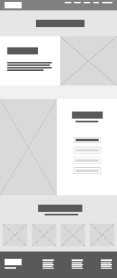
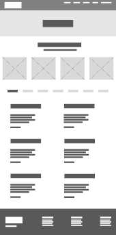
Fonts
Fonts and sizes
| Element |
Font |
Size |
| H1 – logo, page titles and section headings | Erica One (secondary font) | 48px |
| H2 – quotes | Inter (primary font) | 40px |
| H3 – dish names and subheadings | Inter, bold | 32px |
| P – body text | Inter | 24px |
| H5 – navbar links, footer and small text | Inter | 20px |
We use two fonts with separate roles. Erica One is a heavy, rounded display font that gives OPA! a Greek feeling, so it is only used for the logo and headings. Inter is a clean and highly readable
sans-serif, and is used for everything the user actually needs to read, such as the menu, descriptions and opening hours.
Colour scheme
Colours
| Colour |
Hex |
Used for |
| Off-white | #F6F3EC | Page background, and text on blue backgrounds |
| Dark blue | #0A3A7A | Navbar, footer, borders, secondary buttons and headings |
| Blue | #0D5EAF | Title banner and olive/lemon divider icons |
| Orange | #CC3B01 | Primary buttons, active menu category and selected options in the booking |
| Off-black | #1E1E1E | Body text on the off-white background |
| Grey (off-black, 25% opacity) | #1E1E1E at 25% | Unavailable dates and times, input fields and image placeholders |
The blue and white palette refers to the Greek flag and Mediterranean architecture, while the warm off-white
background keeps the site from feeling cold. Orange is used only for user interaction and only for the most important action on
a page (such as "Reserve a table") and for what the user has selected, so it always signals "click here" or
"you chose this".
Links, buttons and borders
Navigation links are uppercase off-white text, and the current page is underlined. The Reservations link is
styled as an outlined pill-shaped button, so it stands out from the other links. Inline links, such as the address,
are underlined. Primary buttons have a solid orange fill, while secondary buttons have a transparent fill with a
2px dark blue border and rounded corners. Content boxes, like the steps in the booking flow, have a 2px dark blue
border with rounded corners (24px). Timeslots, people and dates that are available are presented in a filled dark blue box. The site uses a flat design without shadows, which fits the clean and modern style.
Navbar
The navbar is a full-width dark blue bar fixed to the top of every page. The OPA! logo is placed on the left
and links back to the homepage. The links Menu, Events, About and Contact, together with the Reservations button,
are aligned to the right.
Banner
Directly below the navbar is a full-width blue banner with the page title centred in Erica One, for example
"The Menu" or "Contact us". This tells the user immediately which page they are on.
Section divider
Content sections are separated by a repeating row of olive and lemon icons between two dark blue lines.
Footer
The footer is a full-width dark blue block at the bottom of every page. The logo and "EST. 2026" are placed
on the left, and three columns on the right show opening hours, location (with a linked address and wheelchair
accessibility) and contact information (email, phone and Instagram).
Background images and screen size
The site uses no background images. Photos are placed as content images in a split layout, with text on one
half and a photo on the other. The mockups are designed for a 1440px wide screen, but the layout will adjust
its width to fit different screen sizes.
How the design fulfills the goals
The design reflects OPA!'s concept, "An old story, served differently", by combining classic Greek blue and
white with a bold, playful font and a clean, modern layout. This gives a good first impression and supports
the goal of attracting new customers.
Because the navbar is always visible, users can reach the menu, events and contact information from any page,
and the highlighted Reservations button makes it easy to book a table. The footer repeats opening hours, address
and contact details on every page, which is useful for returning customers who just need practical information.
A consistent template across all pages also makes the site easy to learn, since once you have seen one page you
know how all of them work.
For accessibility, we use high contrast between the off-white background and the dark text, large body text
(24px) and a readable font. All color combinations have been checked according to accessibility requirements.
6. Content
Our website contains 6 seperate pages;
Homepage - index.html
The homepage will be the first page that appear when the users goes into the website.
The homepage will function as an introduction to OPA! and provide users with a first impression of the restaurant.
The page will give the users information about what kind of food OPA! have to offer and where you can locate the resturant.
The page will also present visual content such as images of the restaurant atmosphere and selected dishes to create interest and reflect the Greek-inspired style.
It will also provide a clear shortcut to the booking page to support reservations.
In addition it will give a shortcut to the menu, events and contact information, so the user easly can get the information they seek.
Essential contact information will also be available at the bottom of the page for easy access.
The homepage will fulfill the goal to get more costumers, because the good navigation and accesibility will make a good impression and easy access to everything the users need.
The homepage will be simple with minimal text in order to not overwhelm the audience.
The design will encourage the user to further explore the website by clicking on the shortcuts.
The naviagtion bar is also easy accessable for exploring the website.
The homepage will contain 6 different pictures of the food and the vibe of the resturant.
The content on the different pages between the banner and the footer changes from page to page.
The sections are divided by a decorative olive-ans-lemon divider.
In the sections the pictures are designed to take up half the space, and changes from being on the right or the left side.
The first picture has a height of 767, the second has a height of 908 and the last four has a height of 311.
The last four pictures are designed to be equal as big and lined up in a row.
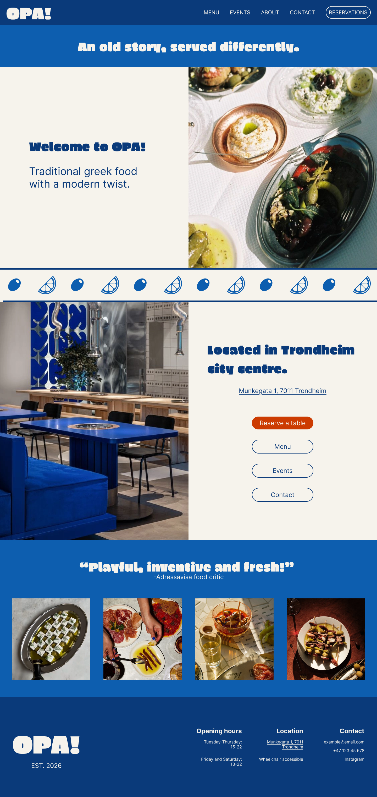
About - about-us.html
The "About us" page will include information about the restaurant’s concept, background, and inspiration.
It will present OPA! as a modern Greek restaurant in Trondheim and briefly describe its origins and culinary style.
This page will provide an inspiring story about how OPA! became a sucessful resturant, and therefore fulfill the goal of attracting more costumers.
This page will have three different old photos of OPA!`s story with the same layout as the previous ones. the first picture has a height of 767, the second has a height of 1047 and the last one has a height og 629.
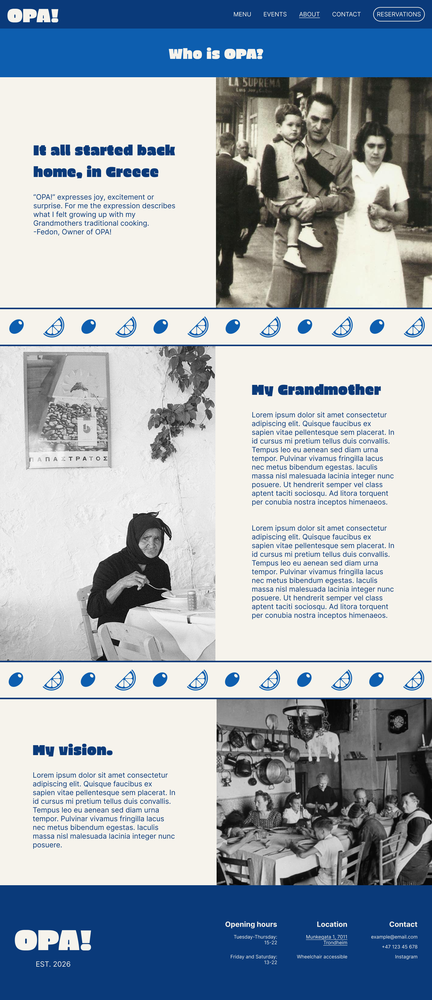
Menu - menu.html
This page will present the restaurant’s food and drink offerings and their prices.
The menu page will be organized into categories such as starters, dinner, special grill, desserts, lunch and drinks.
This will make it easy for the users to click on what they find interesting.
The menu page will have the same four small pictures that was at the bottom of the homepage, of different fun starters.
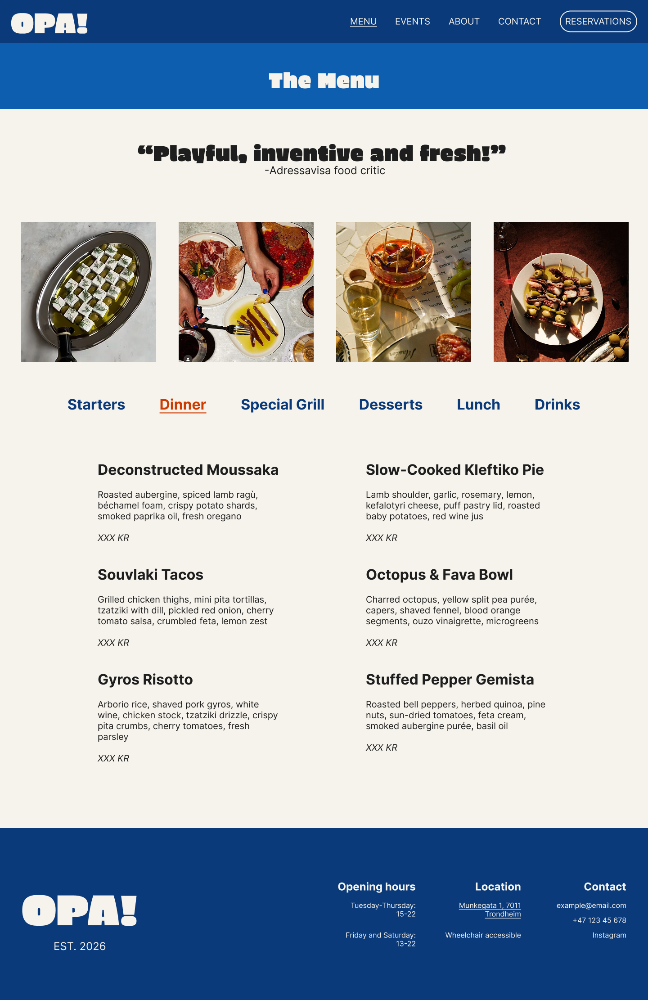
Event - event.html
The event page will give the users insight in the resturant special events.
OPA! will have a concept evert friday thats called "grill-fever friday`s".
on this side the users can see the specials the resturant offers on Friday`s.
It will give the users information about the grill menu, prices and discounts as well as when this event happens.
The event side have two pictures of the grill event, with the same layout as the previous pages. the first picture has a height of 782 adn the second one has a height of 1137.
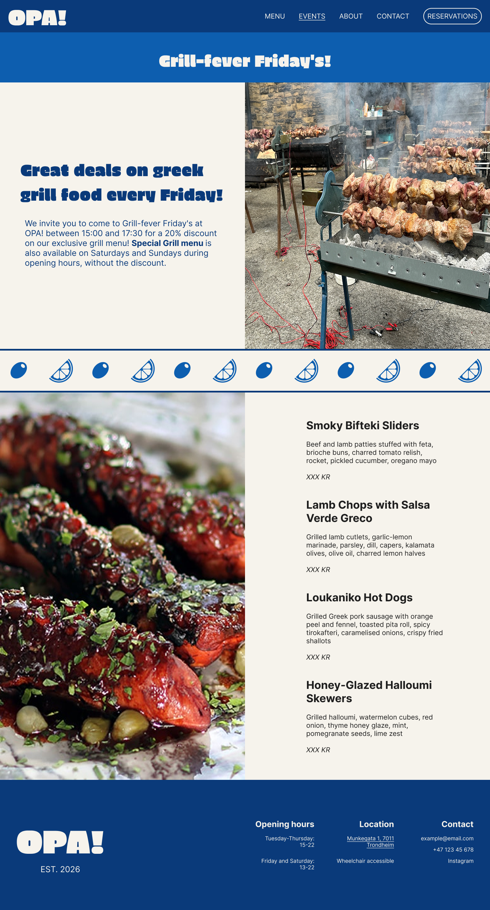
Contact - contact.html
The "contact" will include essential information such as email, phone number, instagram account and reservations.
It will also again give the adress information on where to find OPA!.
The side includes one photo of the resturant on the right side that takes up half the screen with a height of 787.
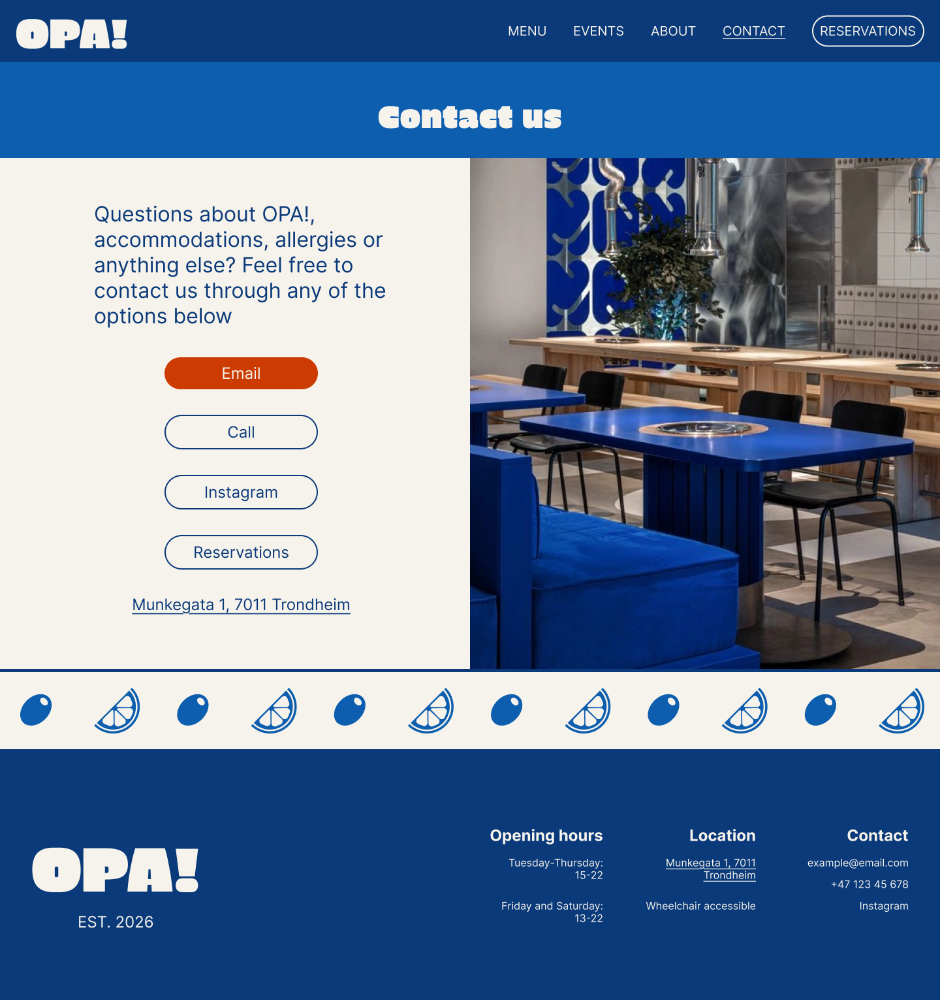
Reservations - reservations.html
The reservation page is designed to be easy for the users to navigate through. They first have to click on how many guests they want to reserve a table for, then they will be taken over to pick a date.
After they have chosen a date, they will have the option of choosing wich time they want to reserve for. after that they will have to fill out contact information such as email, name and add a comment if they want.
Then they will get a booking confirmation that will also be sent to their email adress.
In every page they get to, they will allways have the option to go back to the previous one and make a change by clicking on the shortcut added on the left side.
Reservation-flow
|
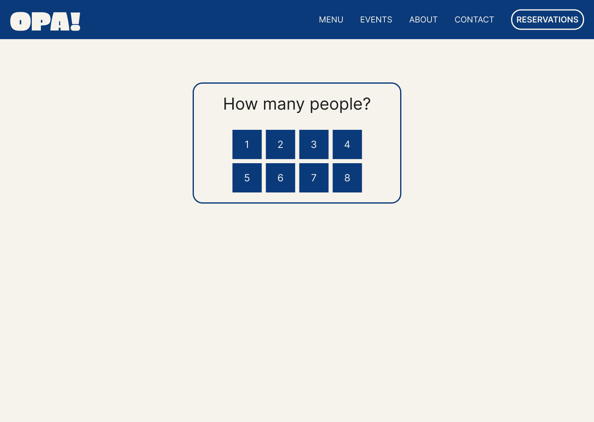
1. Choose guests
|
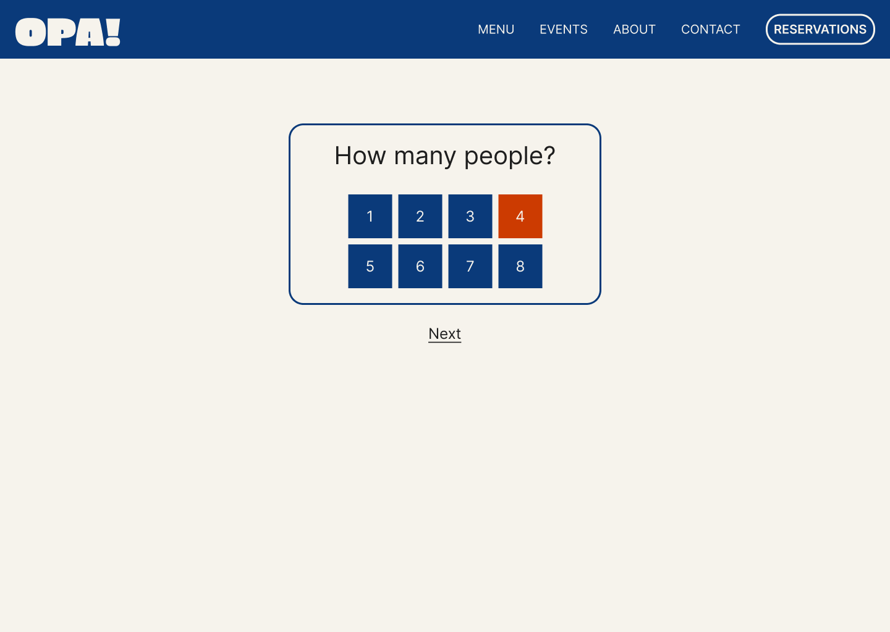
2. Guests selected
|
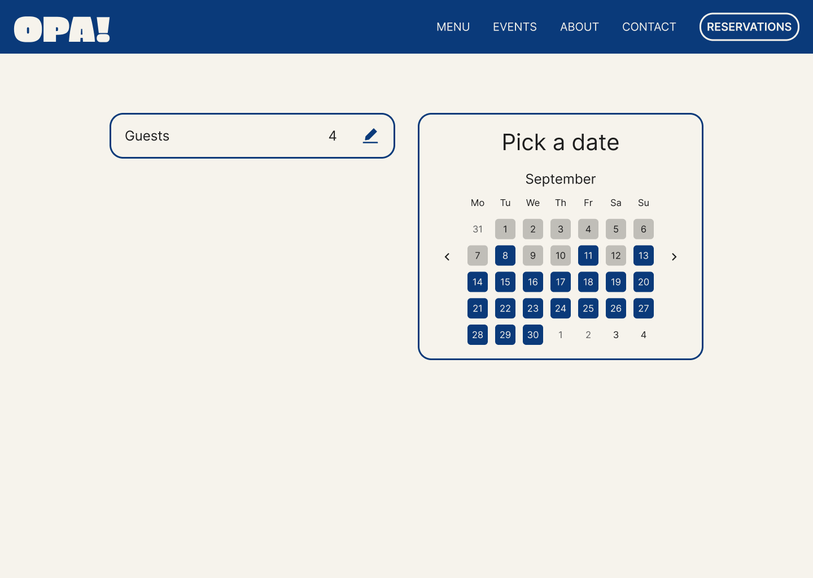
3. Pick a date
|
4. Date selected
|
|
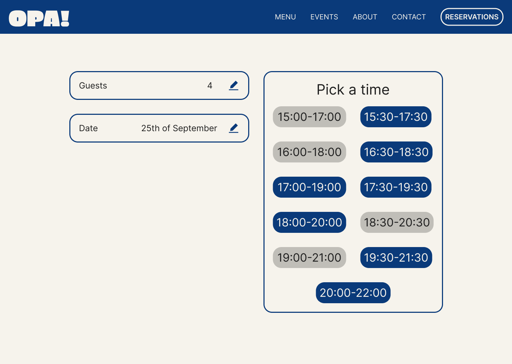
5. Pick a time
|
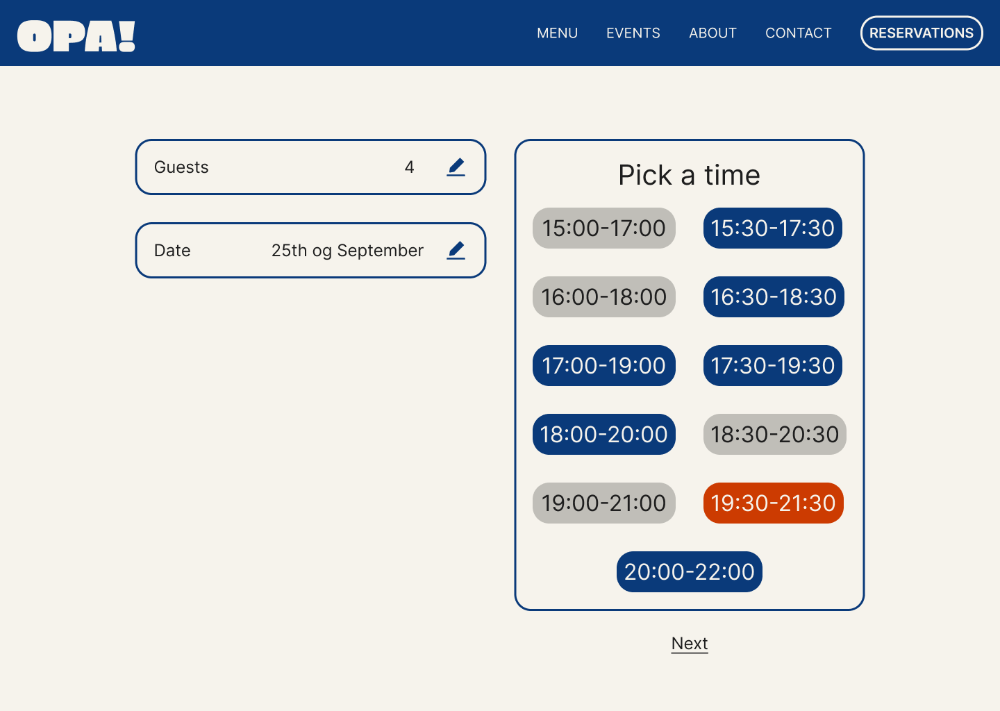
6. Time selected
|
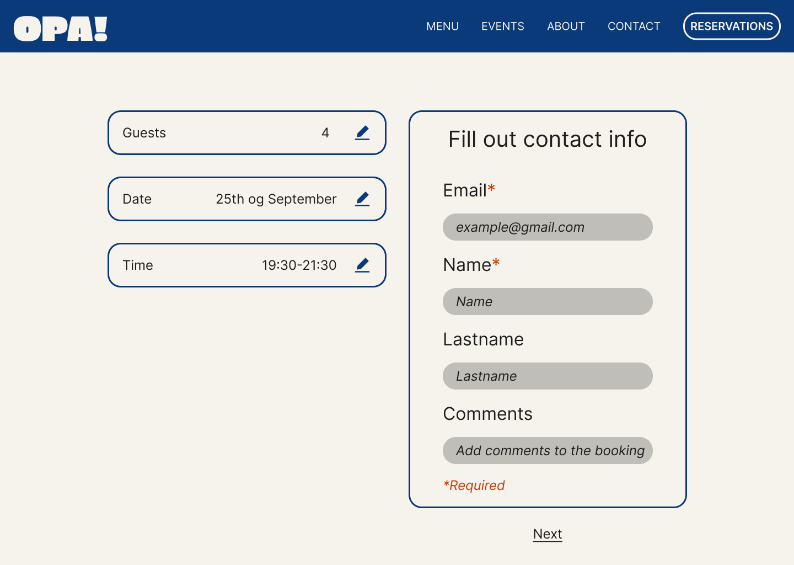
7. Contact info
|
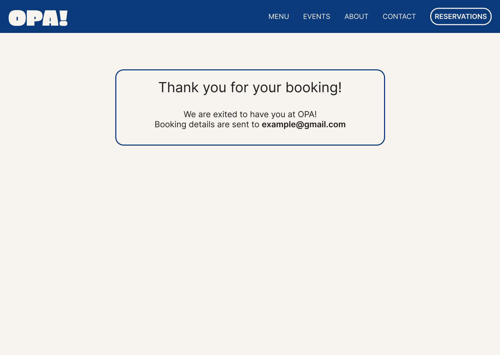
8. Confirmation
|
7. Minimum requirements
Minimum Requirements and Responsibilities
| Requirement |
Description |
Page(s) |
In charge |
| JavaScript 1 | Velger mellom ulike menyer | menu.html | Birgitte |
| JavaScript 2 | Reservasjonsflyt (Husker gjester, dato, tid) | reservations.html | Lasse |
| JavaScript 3 | Skjema validering i booking system (Feilmeldinger epost og navn) | reservations.html | Lasse |
| JavaScript 4 | Generer dagene selv og gråer ut utilgjengelige dager | reservations.html | Lasse |
| Responsive component 1 | Nav-bar strek under siden man er på | All pages | All |
| Responsive component 2 | Hyper link knapper får annen stil med hover | index.html and contact.html | Marte S and Marte K |
| Responsive component 3 | Menyen endrer farge klikk | menu.html | Birgitte |
| Responsive component 4 | Valg tatt i reservasjonsystem endre etter brukerinteraksjon | reservations.html | Lasse |
| CSS for layout | Flexbox:navbar,footer,knapper. Grid:galleribilde, meny og kalender | All pages | All |
| Accessibility 1 | Semantisk html | All pages | All |
| Accessibility 2 | Alt tekst på bilder (Gode beskrivelser) | All pages | All |
| Accessibility 3 | Labels for skjema felt (Eks:Email) | reservations.html | Lasse |
| Accessibility 4 | Tastatur navigasjon på valgbare i booking (Buttons ikke divs) | reservations.html | Lasse |
| Accessibility 5 | Fargekontraster (Hensyn til svaksynhet og fargeblindhet) | All pages | All |
| JavaScript 1 | Choose between different sections of the menu on the menu page. This makes it easy for the user to navigate through the menu. | | |
| JavaScript 2 | Reservation flow that remembers amount of guests, date and time, which makes the booking process more effective. | | |
| JavaScript 3 | Validation messages in the reservation flow, for example error messages from missing names or e-mail. This makes it clear for the user which
informaton is necessary to make a booking. | | |
| JavaScript 4 | Generates and differentiates dates on the calendar, which are available, what is todays date and which dates are unavailable. | | |
| Responsive component 1 | Line underneath the current page on the navbar, clarifies which page the user is currently on. | | |
| Responsive component 2 | Hyperlink-buttons has another style and hover compared to the other buttons. | | |
| Responsive component 3 | Sections on the menu page changes color and adds underline based on which section the user has clicked on. | | |
| Responsive component 4 | Changes style of buttons of choice during the reservation flow, changing them to orange. | | |
| CSS for layout | Flexbox:navbar,footer,buttons. Grid:gallery images, menu og calendar | All pages | All |
| Accessibility 1 | Semantic html | | |
| Accessibility 2 | All text on images (Good descriptions) | | |
| Accessibility 3 | Labels for fields in the reservation flow (Example:Email) | | |
| Accessibility 4 | Keyboard navigation on choosable fields in the reservation flow (Buttons not divs) | | |
| Accessibility 5 | Color contrasts (Accommodating visually impaired and color-blind users) | | |
8. Plan
Organizational Scheme
All of the following files will be gathered inside a folder called OPA!.
The HTML pages are placed directly in this folder, while the stylesheet, images
and JavaScript files each have their own folder to keep the project organized.
List of Files and Folders
- index.html
- menu.html
- event.html
- about-us.html
- contact.html
- reservations.html
- css/
- images/
- logo.png
- hero-meze.png
- interior-blue-tables.png
- gallery-feta.png
- gallery-charcuterie.png
- gallery-skewer-bowl.png
- gallery-olive-skewers.png
- events-grill-spits.png
- events-grilled-closeup.png
- about-family-street.png
- about-grandmother.png
- about-family-dinner.png
- icon-olive.png
- icon-lemon.png
- icon-edit.png
- scripts/
Work Division and Deadlines
| Filename |
Description |
In charge |
Deadline |
| index.html | The homepage | Marte S | dd.mm.2026 |
| menu.html | The restaurant's menu | Birgitte | dd.mm.2026 |
| event.html | The menu for events and information | Lasse | dd.mm.2026 |
| about-us.html | Information about the restaurant | Marte K | dd.mm.2026 |
| contact.html | Contact information and map | Marte K | dd.mm.2026 |
| reservations.html | Table reservation form | Lasse | dd.mm.2026 |
| css/style.css | All styling for the website | All | dd.mm.2026 |
| Menu Switcher | Switch between different menus | Navn | dd.mm.2026 |
| Reservation flow | Remembers guests, dates and time | Navn | dd.mm.2026 |
| Form validation | Erorr message for name and email in booking form | Navn | dd.mm.2026 |
| Dynamic calendar | Generates the days and greys out the unavailable ones | Navn | dd.mm.2026 |
| Final controls | Testing and validating all files | All | dd.mm.2026 |
Information from our client
Since our client is imaginary we will invent the information we need from the client about the restaurant and the webpage
The information we use is set to match other restaurants in Trondheim